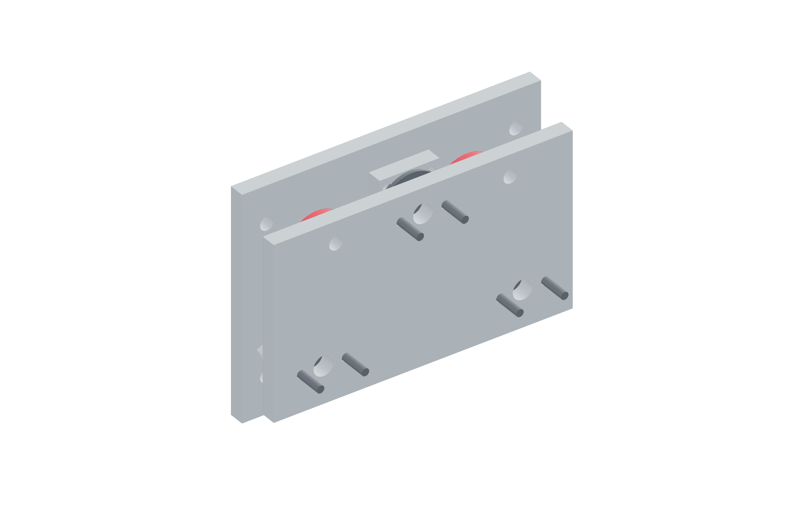

Payload / transverse release95 / 179
Fit the three magnetic retainers
Steel cup magnets pull the registered seats together. Their air gaps are adjusted only after the balls and dowels are fully seated.
Add3 steel cup magnets · 3 M5 × 25 countersunk screws · 3 carbon-steel 25 OD × 2 mm strikers · metal shims · 3 M5 × 16 striker bolts / washers / nuts
Tools / setupHex key · caliper · independent tray support

- Through-bolt each 25 × 7.7 mm steel cup with its M5 × 25 countersunk screw; verify the head seats flush in the actual cup.
- Fit the three carbon-steel strikers on the opposite plate at their matching stations.
- Fully seat all hardened ball/dowel contacts, then adjust matched metal pole-gap shims without separating those contacts.
- Begin with a lightly retained supported tray. Qualify actual added nozzle release in all directions after gun/cable installation.
Ready when
The registered seat closes fully, all cup/striker fasteners are retained and the air gap can be adjusted without moving the hardened contact datum. An aluminum striker, proud screw or magnet preventing seat closure fails the retainer. Correct the steel interface before force testing.